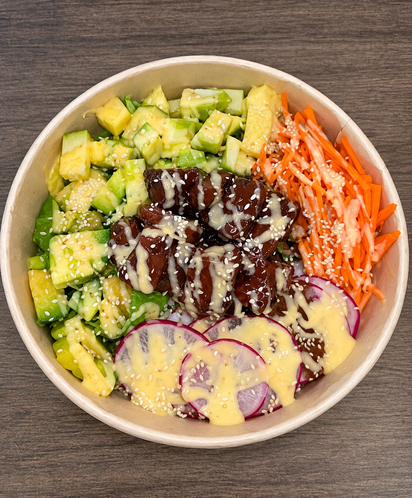

Equilibrio
que tiene sentido.
Combinaciones y porciones guiadas por un profesional en salud.
Un nutricionista piensa el equilibrio. Un chef le pone todo el sabor. Juntos creamos platos que te hacen bien y te dan ganas de volver.

En VITAL GOURMET creemos que cuidarte no debería sentirse complicado ni aburrido. Nuestra idea une la ciencia de la nutrición con la creatividad del chef.
Cada plato busca combinar proteínas, carbohidratos y vegetales en porciones pensadas para ti, sin dejar el sabor ni la presentación a un lado.
¿Te suena bien? Cuéntanos ↗Combinaciones y porciones guiadas por un profesional en salud.
El chef transforma buenos ingredientes en platos que provocan.
Una forma práctica y rica de darle un sí a tu bienestar.
Imagina un plato donde cada ingrediente cumple un papel y cada bocado sabe increíble. Esa es la experiencia que queremos poner a prueba contigo.
Este MVP es una página web informativa: nos permite explicar la idea y recoger opiniones antes de construir un restaurante o una plataforma completa.
La propuesta de valor y un formulario que recoja opiniones para validar la idea con usuarios.
IMPRESCINDIBLE PARA VALIDARUn ejemplo visual del plato y una explicación de sus componentes.
APORTA MUCHO VALORPreferencias de sabor, menú semanal o recomendaciones personalizadas.
SI HAY TIEMPO Y RECURSOSPagos en línea, domicilios y una aplicación móvil completa.
LO DEJAMOS PARA DESPUÉSEn este ejercicio usamos MoSCoW como “Most Value Priorities”: priorizamos por valor lo que debe tener, debería tener, podría tener y dejamos para después lo que no construiremos por ahora.
Estamos validando esta idea. Tu respuesta nos ayudará a saber si vamos por buen camino.